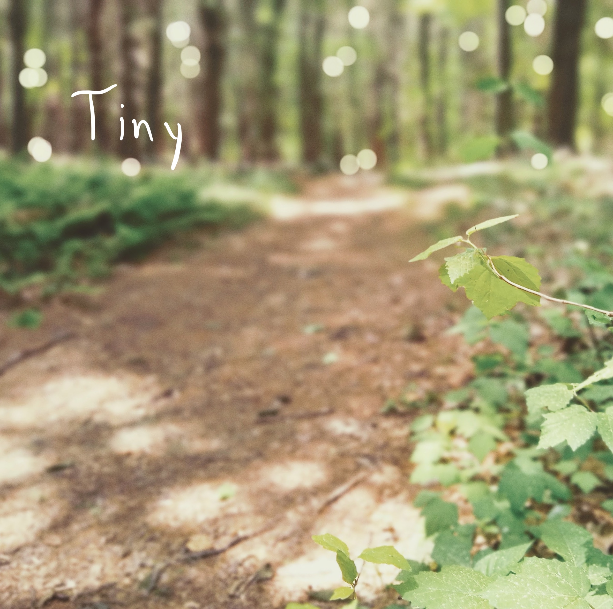

Introducing Saint Silva, a new ambient musical project with a first EP.

Today I released my first EP under the moniker Saint Silva, exclusively here on Bandcamp (all proceeds go to IEN). I have been thinking about this project for a few months now, and finally got a chance to put some weight behind it. This is the first time I am actually writing about why I wanted to start this in the first place.
There’s an inherent risk in starting new musical projects; they feel exciting at first, but quickly fizzle out and die. At the moment I am juggling 3-4 different musical projects, all with different types of styles/sounds, and all at various levels of “readiness” to share with the world. Saint Silva is my way of granting permission, to myself, to experiment freely with the ideas I am currently most enamored by.
Like oxygen
A few months ago, a friend introduced me to the more private work of Jim O’Rourke through his Steamroom sessions. Since then I keep thinking about something he said in an interview—when asked about the motivation behind these mini-releases, his reply was “I just have to make them…it’s like my oxygen.”
This felt familiar and also entirely new. I am usually writing, intentionally or subconsciously, some kind of music, because I think at some level I need to. But when it comes time to do a (drumroll) release, my momentum crumbles.
I wanted to find ways of circumventing this cycle. So I turned to using a few creative constraints.
Some rules for Tiny and beyond
This album was composed during a weekend away at a tiny house in New Hampshire. The tracks include various field recordings from inside and outside of the house. Most tracks, by design, use only one or two analog synthesizers, and a piano.
Each song is meant to capture a place in time, removed from the world, temporarily.
I mixed and mastered the tracks in about two days. One of the rules I am setting for myself with Saint Silva is to release the music while I’m still excited about it. This is a vague measuring stick, but to not follow this rule introduces what I’ve come to think of as a “cycle of supression”.
The cycle goes like this:
- I write a song, and I am very excited about it
- I start recording the song, and I am still excited
- I dive into the technicalities of recording in my DAW like choosing plug-ins, adding reverb, automating mix parameters, etc.
- Then, feeling exhausted I take a break…and it sits, on my laptop, for weeks. Other life happens. I am always thinking about it, and it is always mocking me. I feel it can be better, somehow; I just need to figure out how to improve it.
- Slowly, I fall out of love with the song I first started and it never sees the light of day.
I hate that. I hate thinking there are unfinished ideas that I am simply too precious to ever put out there. As Ray Bradbury wrote:
“Self-consciousness is the enemy of all art, be it acting, writing, painting, or living itself, which is the greatest art of all.”
In an attempt to suppress my self-consciousness, my rule for this work is to publish while I’m still excited. This is a tricky balance beam to walk; not all work is meant to be shared with the world. Editing is an essential step. Bradbury also said:
“All arts, big and small, are the elimination of waste motion in favor of the concise declaration.”
So, to walk the fine line then. But it’s a challenge I’d like to embrace.
Album notes for Tiny
I am always fascinated to raed about the processes other artists use to create their work. I want to make that a priority with Saint Silva as well. So here are some notes on the influences and building blocks that led to this piece of music.
Music for airports forests
Although I have been writing music most of my life, I only recently began to actively put out new music again under B. Dexter. This music is often deeply personal, lyrical, and structured in a more-or-less mainstream friendly format. But lately I have become enveloped in the worlds of experimental and ambient music, which don’t seem to fit as well into the process of how I usually write songs.
After a few months of reading up on the work of Brian Eno, Steve Reich, Harold Budd (etc etc.) I decided to create a musical playground of sorts. I bought a few analog synths and started thinking about how to incorporate oblique strategies into the songwriting and music-making process.
I quickly became obsessed with Eno’s landmark Music for Airports album, especially after reading this article which dissects how Eno constructed the various tape loops to create the work in 1978.
The idea of music as “furniture music”, or background music that complements a certain time and place, has been around for a century. It was first used in 1917 by French composer Erik Satie. Using this concept, I started wondering what music for different environments might sound like; what sitting by a pond sounds like, or hiking through the woods, or standing in the rain.
I find this crossroads of electronic music and nature to be fascinating, partly due to the apparent dichotomy between the two: electrical circuits generating sound against the backdrop of soft crickets and forest noise. This is the space I want to explore.
Environmental music
Of course there is an obvious nod here to the genre of environmental music (sometimes referred to as “Japanese Ambient Music” due to the pioneering artists in the space from Japan). I have been greatly influenced here by the work of Hiroshi Yoshimura’s GREEN and Shiho Yabuki’s New Meditation.
There’s something whimsical and searching about these songs that I can’t put my finger on yet. But it was the first time I started seriously thinking about using field recordings in music as an ambient backdrop.
The contrast of natural noises to the “artificial” synthesizers (although electrical currents are no less natural, per se) creates a kind of marriage between the wild and the domesticated.
Future music
In the coming weeks I’ll be exploring more ideas for Saint Silva. If you’d like to follow along, follow me on Bandcamp or subscribe to my email newsletter updates or you can. I’ll probably post on Instagram too, albeit reluctantly.